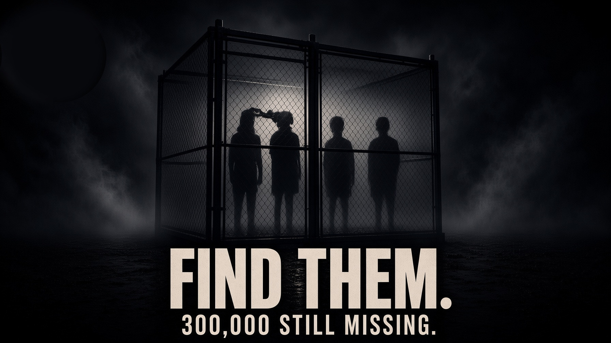
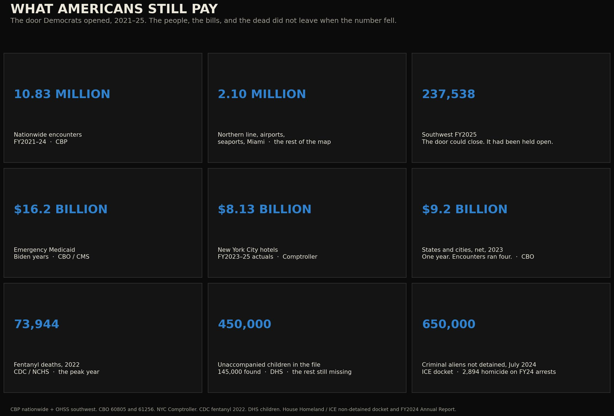
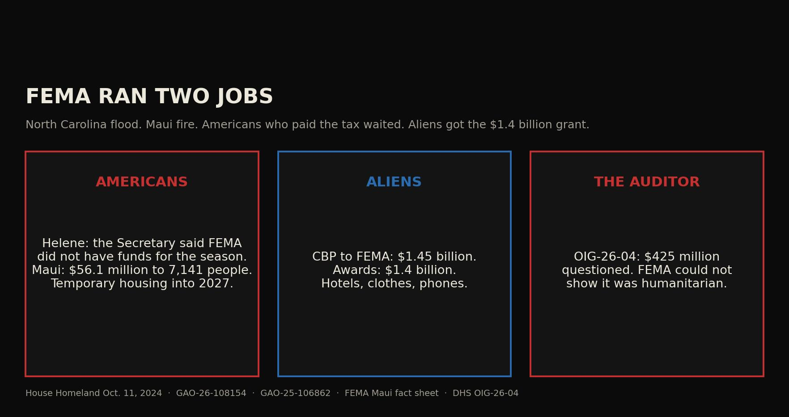
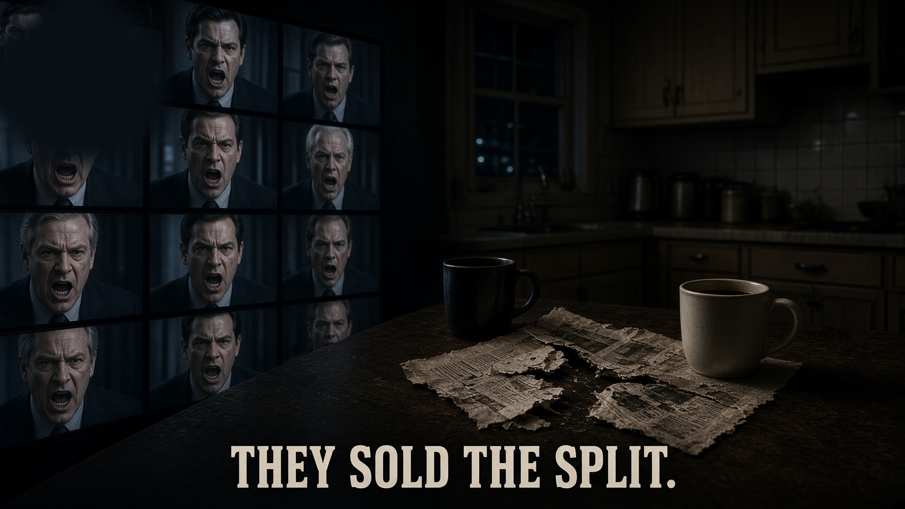
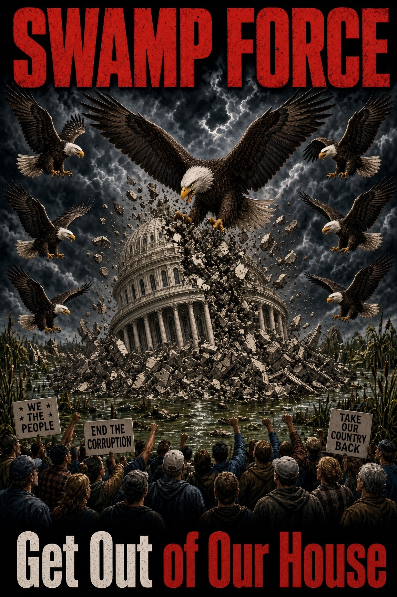
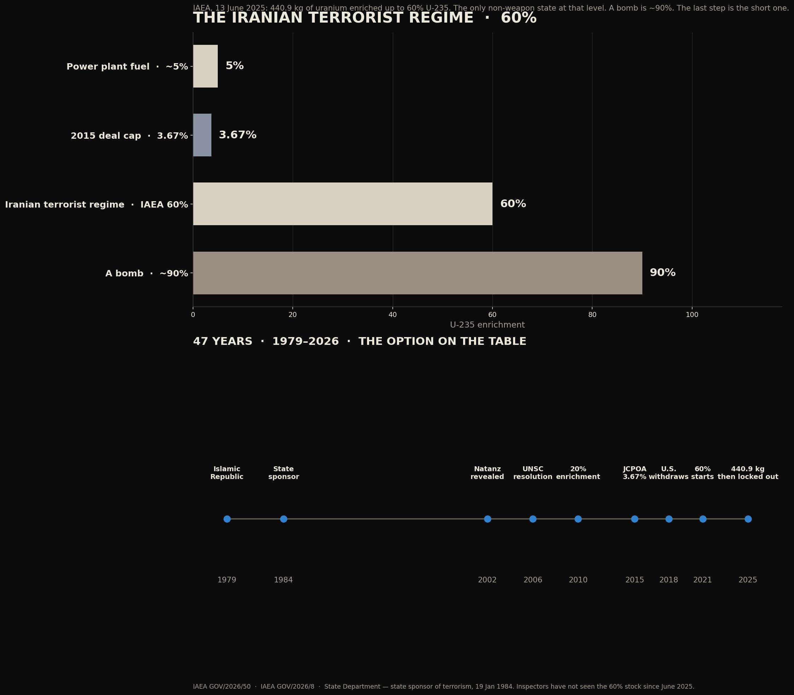
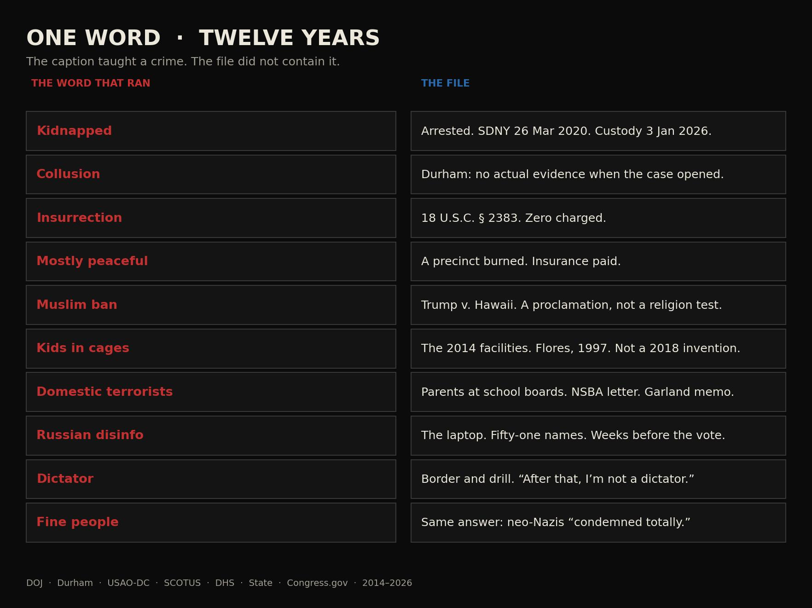
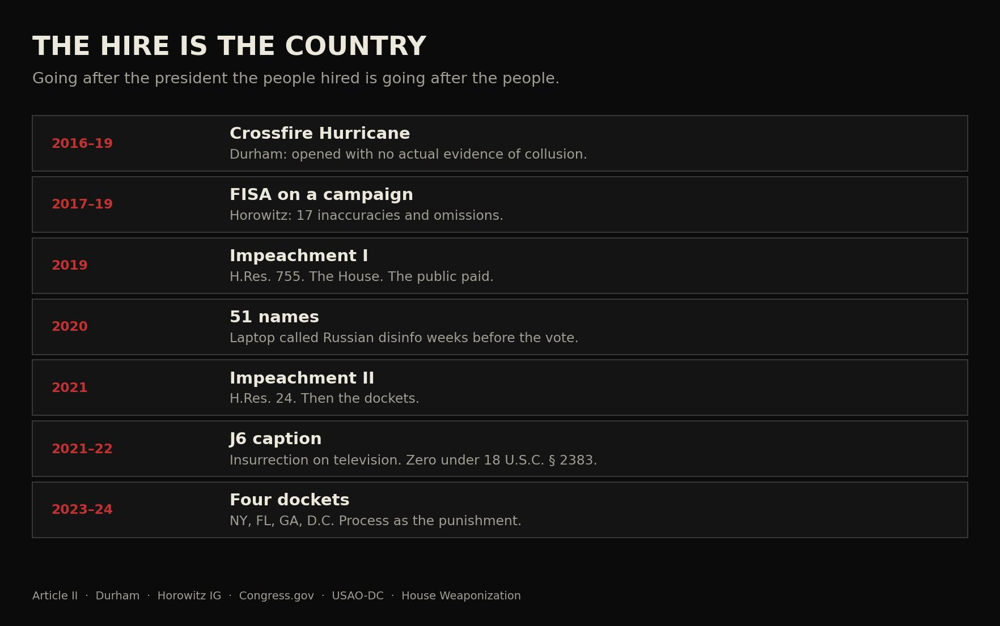
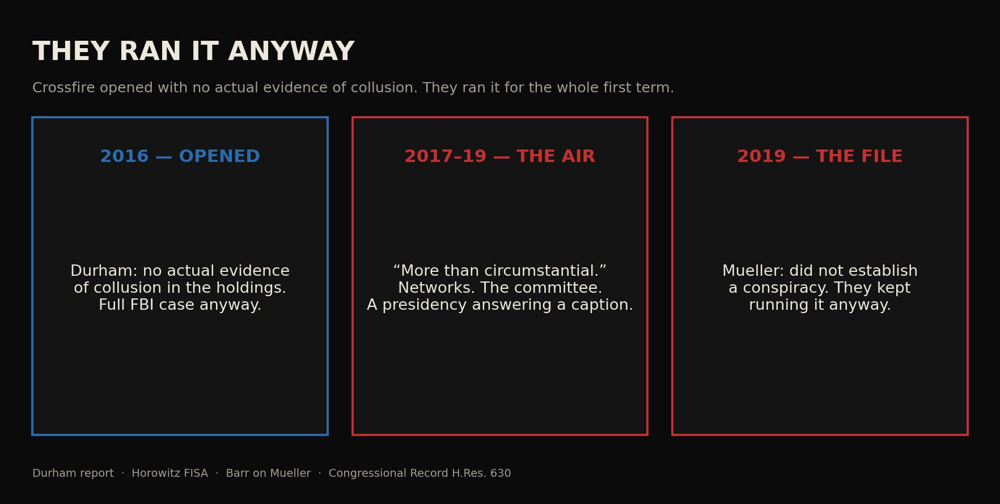
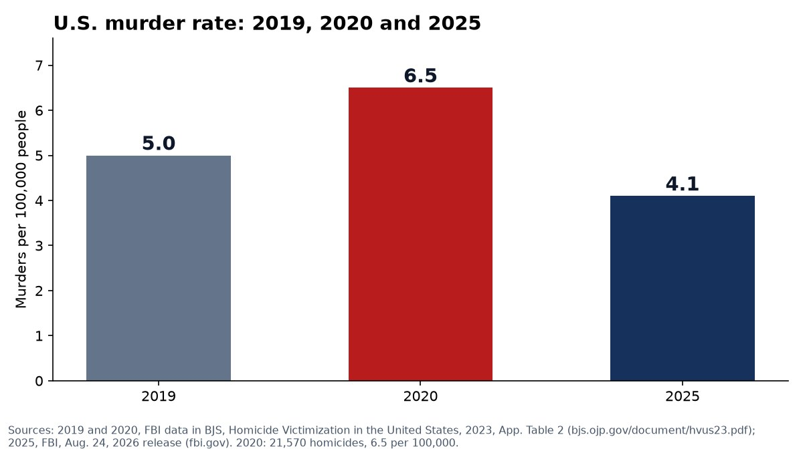

Swamp Force Journal
The Journal
60 short essays you can read in 30 seconds. One number or quote, the record behind it, and the owner’s view, labeled. Tap any fact to open its source. The full verified essay is one tap away.
The Border 7

Aug 31, 2026 · 30 seconds
Find them.
146,000 children located so far. The Inspector General says ICE could not account for all who missed court.
Read →
Sep 20, 2026 · 30 seconds
They opened the border.
8.72M — southwest land border encounters, fiscal 2021–2024, counted by DHS's statistics office
Read →
Sep 21, 2026 · 30 seconds
What the taxpayer bought
$1.4B — in FEMA shelter grants, FY2023–24. The Inspector General found FEMA could not ensure it was used as the law required.
Read →
Sep 20, 2026 · 30 seconds
The hospital. Then the morgue.
$27B — federal and state emergency Medicaid for people ineligible because of immigration status, FY2017–2023 (CBO)
Read →Aug 31, 2026 · 30 seconds
Who got paid.
8.72M — southwest border encounters, fiscal 2021–2024 (DHS statistics office)
Read →Aug 31, 2026 · 30 seconds
Defund ICE is the tell.
32,000+ — unaccompanied children who missed immigration court, FY2019–2023 (DHS Inspector General)
Read →
Sep 21, 2026 · 30 seconds
FEMA ran two jobs
$1.45B — CBP money Congress directed to FEMA for migrant Shelter and Services, FY2023–24 (DHS OIG-26-04)
Read →Images from original essays that are not on the site yet.


The Republic 7
Sep 17, 2026 · 30 seconds
They forgot who they work for.
“Maximum warfare.” “Break their spirit.” The tape, in context.
Read →
Aug 24, 2026 · 30 seconds
They work for us
$17.2 million in workplace settlements, two House votes, and the names still withheld.
Read →
Sep 21, 2026 · 30 seconds
We the People.
$40T+ — national debt on the Treasury's Debt to the Penny. The last budget surplus: fiscal 2001 (CBO).
Read →
Sep 18, 2026 · 30 seconds
They want a new Constitution.
“abolish capitalism and ultimately to achieve communism”
Read →Aug 26, 2026 · 30 seconds
The republic, not the caption
“We the People, not a television panel and not a six-second clip.”
Read →Aug 30, 2026 · 30 seconds
They hold it by the blade
“They did not repeal the Constitution. They learned to use it as a weapon”
Read →Aug 24, 2026 · 30 seconds
They published the replacement
“Workers Deserve More”
Read →Congress 14

Sep 2, 2026 · 30 seconds
The noise.
1997 — the last time Congress passed every money bill on time, per the Congressional Research Service
Read →
Sep 2, 2026 · 30 seconds
They sold the split.
“Stop selling the split. Debate the statute.”
Read →Sep 2, 2026 · 30 seconds
Full time or go home.
$7.258B — legislative branch spending, fiscal 2026 (CRS / Pub. L. 119-37)
Read →
Sep 2, 2026 · 30 seconds
The whole bill.
“Post the stack. Show the slides.”
Read →Aug 23, 2026 · 30 seconds
The recess blockade
10 days — a recess shorter than this is presumptively too short for recess appointments (NLRB v. Noel Canning, 2014)
Read →
Sep 21, 2026 · 30 seconds
The funnel
$1.4B — FEMA grants to states, cities and nonprofits for migrant shelter and services, fiscal 2023–24 (DHS OIG-26-04)
Read →
Sep 21, 2026 · 30 seconds
They don’t write the bills
“All legislative Powers herein granted shall be vested in a Congress of the United States”
Read →
Sep 21, 2026 · 30 seconds
Paying the Taliban
$10.9M+ — of U.S. taxpayer money paid to the Taliban-controlled government in taxes, utilities, fees and customs (SIGAR 24-22)
Read →Aug 22, 2026 · 30 seconds
The $7 billion machine
$7.258B — legislative branch spending, fiscal 2026 (CRS / Pub. L. 119-37)
Read →Aug 21, 2026 · 30 seconds
The line in the sand
“535 people do not outrank 300 million. They work here. They do not own it.”
Read →
Aug 29, 2026 · 30 seconds
Why the lobby should be illegal
“Paid influence is not speech. It is a second government the people did not hire.”
Read →Aug 29, 2026 · 30 seconds
Not a part-time job
$174,000 — base salary of a rank-and-file member of Congress (CRS)
Read →
Aug 30, 2026 · 30 seconds
What we can do
“A protest that stays peaceful is the republic working. A riot is their caption.”
Read →Aug 30, 2026 · 30 seconds
The debt they will not close
FY1997 — the last year all regular appropriations were enacted on time, by October 1 (CRS)
Read →The Parties 8

Aug 20, 2026 · 30 seconds
The uniparty mirror
“Cameras on: a fight. Cameras off: the same surveillance bill, the same blank check.”
Read →Aug 29, 2026 · 30 seconds
How the House was captured
“Not a movie syndicate. A paying club. Both parties kept the books.”
Read →Aug 29, 2026 · 30 seconds
What the Democrats became
“A party is a tool. When the tool stops serving the people who built it, name the date.”
Read →Aug 29, 2026 · 30 seconds
What the GOP became
“A jersey is not a receipt. Read the roll call.”
Read →Aug 30, 2026 · 30 seconds
Why they hate Trump
237,538 — southwest Border Patrol apprehensions in fiscal 2025, the lowest since 1970 (CBP)
Read →Aug 29, 2026 · 30 seconds
The gauntlet
“Overlapping cases, a rifle, and a newscast. The point was to make a revolt look like a fever.”
Read →Aug 29, 2026 · 30 seconds
What he told them
“Globalists at the UN. The Taliban on the lawn. Iran in public. Not a staffer’s memo.”
Read →Aug 29, 2026 · 30 seconds
The word that never made the docket
§ 2383 — the federal insurrection statute. Search the January 6 docket: it was not charged.
Read →Democrats 1
Republicans 1
The Tape 15
Sep 21, 2026 · 30 seconds
The pool
“A pool seat is not a verdict, and a caption is not the recording.”
Read →
Sep 21, 2026 · 30 seconds
The Iranian terrorist regime at 60 percent
440.9 kg — of uranium enriched up to 60% U-235, as of June 13, 2025 (IAEA GOV/2026/50)
Read →Aug 26, 2026 · 30 seconds
They don't debate. They flag.
“When they cannot beat the tape, they smear the person holding it.”
Read →Aug 29, 2026 · 30 seconds
How did we get here
“Honest people kept the country standing while a political class learned to treat them as a tap.”
Read →Aug 29, 2026 · 30 seconds
How to watch a president
“Pause the clip. Name the job. Read down the names.”
Read →Aug 25, 2026 · 30 seconds
They clipped the tape
“should be condemned totally”
Read →
Sep 21, 2026 · 30 seconds
One word
0 — people charged under the federal insurrection statute (18 U.S.C. § 2383) for January 6; about 1,583 were federally charged with other crimes
Read →
Sep 21, 2026 · 30 seconds
Taxpayer-funded hoaxes
0 — January 6 charges under the insurrection statute, 18 U.S.C. § 2383 (USAO-DC tally)
Read →
Sep 21, 2026 · 30 seconds
They ran it anyway
17 — inaccuracies and omissions the Justice Department Inspector General found in the Carter Page FISA applications
Read →
Sep 21, 2026 · 30 seconds
They called it protest
6.5 → 4.1 — murders per 100,000: 2020 vs. 2025, FBI data. 2025 ties 1955–56 as the lowest on record.
Read →Aug 29, 2026 · 30 seconds
A caption cannot be outlawed
“The mic stays on the tape. The mute button stays off.”
Read →Aug 30, 2026 · 30 seconds
The floor, not the feed
“Speech or Debate is a shield for the chamber. It is not a license for the rant.”
Read →Aug 29, 2026 · 30 seconds
The law they don't mention
“The real sequence is longer, and the catch is usually in the annex.”
Read →Sep 21, 2026 · 30 seconds
The caption was not the charge
0 — January 6 defendants charged under the insurrection statute, 18 U.S.C. § 2383
Read →Sep 22, 2026 · 30 seconds
A war was waged on Americans
34 — felony counts in the Manhattan case, People v. Trump (NY courts)
Read →The Media 1
The Remedy 7
30 seconds
Article V: the states’ way to fix Congress
34 states apply, 38 ratify. Where the count stands.
Read →Sep 21, 2026 · 30 seconds
How a dirty list goes to court.
90 days — the notice a voter must send the state before suing over a dirty voter roll under the NVRA
Read →Sep 22, 2026 · 30 seconds
Who to call.
90 days — notice to the state's chief election official comes first, not a class action against the House
Read →Sep 20, 2026 · 30 seconds
They're spending taxpayer money on illegal immigrants.
“is not eligible for any Federal public benefit”
Read →Sep 19, 2026 · 30 seconds
They let criminals go free.
“shall take into custody”
Read →Aug 29, 2026 · 30 seconds
This Congress cannot police itself
“They work for us. They do not get to grade their own homework.”
Read →Sep 22, 2026 · 30 seconds
The statute is how it ends
275 vs. 19 — assaults on ICE officers, Jan 20–Dec 31, 2025 vs. the same stretch of 2024 (DHS)
Read →